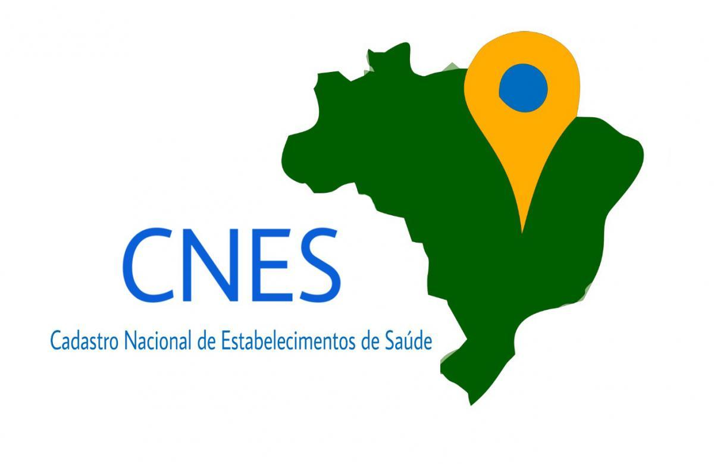
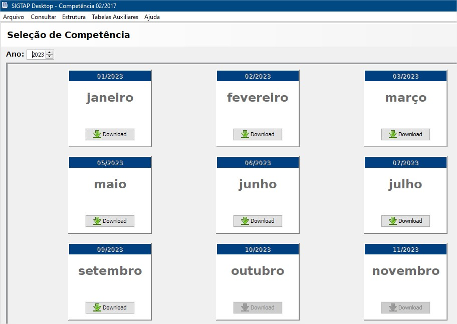
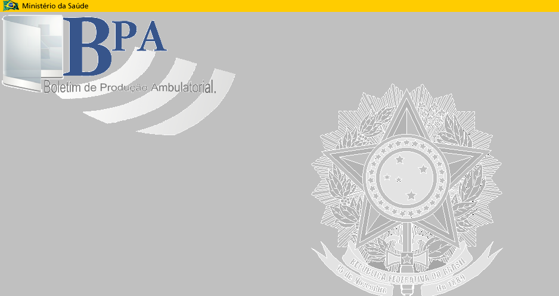
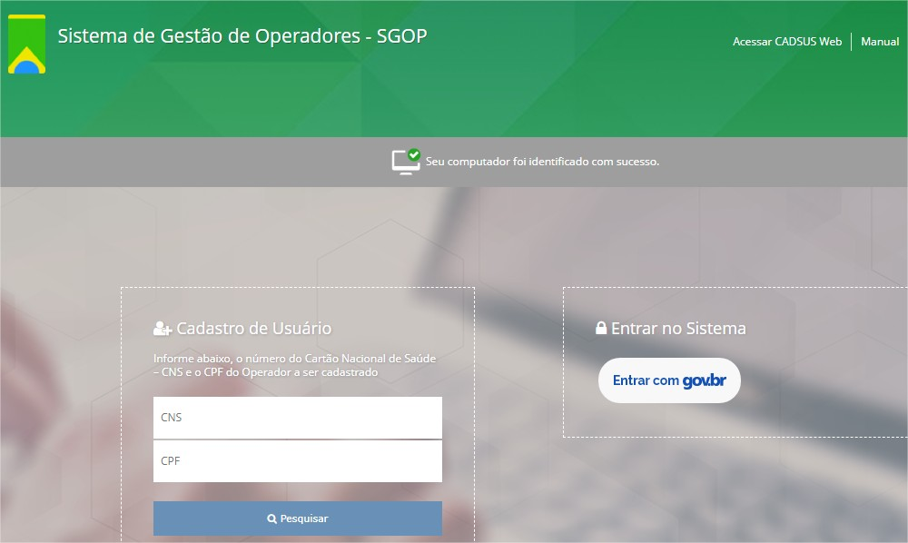

CNES - Cadastro Nacional de Estabelecimentos de Saúde
O CNES (Cadastro Nacional de Estabelecimentos de Saúde) é um sistema de registro e gestão de informações sobre estabelecimentos de saúde no Brasil. Ele é mantido pelo Ministério da Saúde e desempenha um papel fundamental na organização e controle do sistema de saúde do país. Aqui estão alguns pontos importantes sobre o CNES:
- Registro de Estabelecimentos:
Permite o registro e a atualização de informações de hospitais, clínicas, postos de saúde e outros estabelecimentos de saúde em todo o país.
- Planejamento e Gestão:
Ajuda na tomada de decisões estratégicas relacionadas à distribuição de recursos, planejamento de serviços de saúde e alocação de profissionais.
- Controle e Fiscalização:
Facilita a fiscalização e controle de estabelecimentos de saúde, garantindo que eles atendam a regulamentações e padrões de qualidade.
Em resumo, o CNES desempenha um papel fundamental na organização, planejamento e controle do sistema de saúde brasileiro. É uma ferramenta essencial para garantir o acesso a serviços de saúde de qualidade, a distribuição eficaz de recursos e a transparência no setor de saúde do país.

SIGTAP - Sistema de Gerenciamento da Tabela de Procedimentos, Medicamentos e OPM do SUS
O SIGTAP, que significa Sistema de Gerenciamento da Tabela de Procedimentos, Medicamentos e OPM do SUS, é um sistema utilizado pelo Sistema Único de Saúde (SUS) no Brasil para gerenciar e padronizar informações relacionadas a procedimentos médicos, medicamentos e órteses, próteses e materiais especiais.
O SIGTAP é uma ferramenta essencial para a gestão eficiente e padronização de informações relacionadas à saúde no sistema público de saúde brasileiro (SUS). Ele desempenha um papel crítico na organização, controle de custos e transparência do sistema de saúde, beneficiando tanto os profissionais de saúde quanto os pacientes.
Aqui estão os principais aspectos e funções do SIGTAP:
- Padronização de Procedimentos:
Define códigos e valores para procedimentos médicos, medicamentos e órteses, próteses e materiais especiais, garantindo a uniformidade nas cobranças e pagamentos.
- Códigos e Nomenclaturas:
O sistema atribui códigos e nomenclaturas específicos a cada procedimento, medicamento ou dispositivo médico. Esses códigos são usados em faturas, registros médicos, sistemas de informação e outras aplicações relacionadas à saúde.
- Controle de Custos:
Ajuda a controlar os custos dos serviços de saúde, promovendo a eficiência na utilização de recursos públicos.
- Transparência e Auditoria:
Torna as informações sobre procedimentos e custos acessíveis para auditorias e avaliações de desempenho.
- Uso Clínico e Administrativo:
Além de ser usado para fins administrativos, o SIGTAP também auxilia os profissionais de saúde na codificação adequada de procedimentos e no registro de informações clínicas.
- Facilita o Faturamento:
Os prestadores de serviços de saúde utilizam o SIGTAP para elaborar faturas e pedidos de pagamento ao SUS, o que simplifica o processo de reembolso e pagamento pelos serviços prestados.

BPA - Autorização de Internação Hospitalar de Alta Complexidade
O BPA (Autorização de Internação Hospitalar de Alta Complexidade) é um sistema utilizado no Brasil para autorizar e controlar internações hospitalares de alta complexidade. Esse sistema é uma parte importante do funcionamento do Sistema Único de Saúde (SUS) e é usado para garantir que os procedimentos médicos realizados em hospitais de alta complexidade sejam devidamente autorizados e pagos de acordo com as normas do SUS.
o BPA é uma parte fundamental do sistema de saúde brasileiro que visa controlar, autorizar e registrar internações hospitalares de alta complexidade. Ele desempenha um papel importante na gestão eficaz dos recursos de saúde, na transparência do sistema e na garantia de que os pacientes recebam atendimento de qualidade em hospitais de alta complexidade.
Vejamos abaixo os principais aspectos e funções do BPA:
-
Autorização de Internações:
O BPA é usado para autorizar internações hospitalares que envolvem procedimentos médicos de alta complexidade, como cirurgias complexas, tratamentos intensivos e procedimentos especializados.
-
Padronização de Autorizações:
Ele padroniza os processos de autorização, definindo critérios claros para a aprovação de internações hospitalares de alta complexidade. Esses critérios são baseados em protocolos clínicos e diretrizes médicas.
-
Controle de Custos:
O BPA ajuda a controlar os custos dos procedimentos realizados em hospitais de alta complexidade, garantindo que apenas internações necessárias e apropriadas sejam autorizadas e reembolsadas.
-
Registro de Dados:
O sistema registra informações detalhadas sobre as internações, incluindo dados do paciente, informações clínicas, procedimentos realizados e custos associados. Essas informações são usadas para controle, auditorias e análises estatísticas.
-
Faturamento e Pagamento:
O BPA também desempenha um papel importante no processo de faturamento e pagamento. Ele auxilia os hospitais e prestadores de serviços de saúde na elaboração de faturas para os serviços prestados durante a internação e garante que os pagamentos sejam feitos de acordo com as normas estabelecidas.
-
Integração com Outros Sistemas:
O BPA é integrado a outros sistemas de saúde, como o SIGTAP (Sistema de Gerenciamento da Tabela de Procedimentos, Medicamentos e OPM do SUS) e o CNES (Cadastro Nacional de Estabelecimentos de Saúde), para garantir a consistência e a atualização das informações em todo o sistema de saúde.
-
Transparência e Auditoria:
As informações registradas no BPA são acessíveis para auditorias e análises de desempenho. Isso promove a transparência e a prestação de contas no sistema de saúde.
-
Garantia da Qualidade dos Serviços:
O sistema contribui para garantir que os procedimentos médicos realizados em hospitais de alta complexidade atendam aos padrões de qualidade e eficácia estabelecidos pelo SUS.

SGOP - Sistema de Gestão de Operadores (CADSUS WEB)
O CADSUS WEB (Cadastro Nacional de Usuários do Sistema Único de Saúde na Web) é um sistema online desenvolvido pelo Ministério da Saúde do Brasil. Sua principal finalidade é registrar e gerenciar o cadastro de cidadãos brasileiros no Sistema Único de Saúde (SUS).
Em resumo, o CADSUS WEB é uma ferramenta importante para o registro e a gestão de informações de saúde dos cidadãos brasileiros no contexto do Sistema Único de Saúde (SUS). Ele desempenha um papel crucial na organização e na prestação de serviços de saúde de qualidade para a população do Brasil.
Aqui estão alguns pontos-chave sobre o CADSUS WEB:
O CADSUS WEB é utilizado para cadastrar os cidadãos brasileiros no SUS, o sistema público de saúde do país. Isso inclui informações pessoais, como nome, data de nascimento, CPF, endereço e número do Cartão Nacional de Saúde (CNS), se aplicável.
O sistema permite a atualização de informações de saúde dos cidadãos, como mudanças de endereço e outras informações relevantes. Manter os dados atualizados é importante para garantir o acesso a serviços de saúde adequados.
O CADSUS WEB é acessível pela internet, o que facilita o registro e a atualização de informações por parte dos cidadãos e profissionais de saúde autorizados.
O sistema gera um número de identificação único chamado Cartão Nacional de Saúde (CNS) para cada cidadão cadastrado. Esse CNS é usado para identificar os usuários do SUS em todo o sistema de saúde brasileiro.
O cadastro no CADSUS WEB é fundamental para que os cidadãos tenham acesso aos serviços de saúde oferecidos pelo SUS, como consultas médicas, exames, internações e outros atendimentos médicos.
O CADSUS WEB é integrado a outros sistemas de saúde, como o SIA (Sistema de Informações Ambulatoriais) e o SIH (Sistema de Informações Hospitalares), para garantir a consistência das informações em toda a rede de saúde.
A existência do CADSUS WEB ajuda a promover a transparência no sistema de saúde e facilita o controle e a gestão de dados por parte das autoridades de saúde.